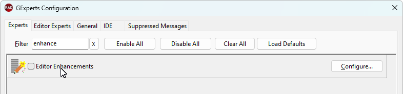

Code Editor Enhancements |
|
The GExperts editor enhancements can improve the functionality of the IDE editor in the following ways:
•Make the code editor tabs multiline instead of utilizing horizontal scrolling •Turn on/off hot tracking for the editor tabs (see TCustomTabControl.HotTrack) •Show the code editor tabs in a raised or flat button style •Enable and then position the GExperts editor toolbar to the top, left, right, or bottom of the code editor window •In Delphi 6/7, you can configure whether the middle mouse button can be used to close tabs (starting with Delphi 2006, this feature is built into the IDE)  Note: Starting with Delphi 2005, the IDE's editor tabs do not support the multiline capability and the other related customizations.
|